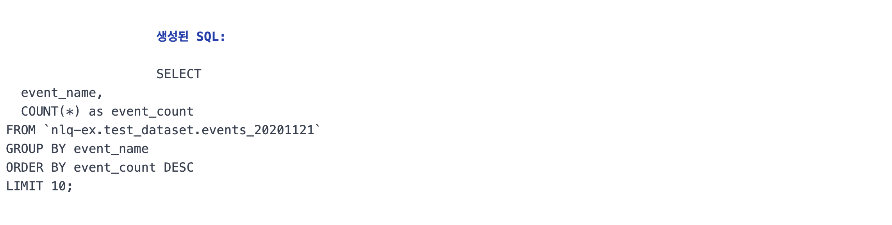

LLM을 활용한 자연어 빅쿼리 데이터 조회 및 분석 시스템
LLM을 활용하여 자연어 질문으로 BigQuery 데이터베이스를 조회하고 분석하는 시스템
LLM(Claude, Gemini, ChatGPT)을 통한 자연어→SQL 변환
고도화된 AI 모델을 활용하여 복잡한 자연어 질문을 정확한 SQL 쿼리로 변환합니다.
자연어로 Google BigQuery 데이터 조회
자연어로만 간편하게 원하는 빅쿼리 데이터 조회 (지난주 A 구매자 수는 몇명인가?)
LLM을 이용하여 사전정의된 분석 리포트 생성
조회한 데이터를 기반으로 사전에 정의한 분석 리포트 작성을 LLM 에게 요청 (주간 리뷰 리포트 작성)
LLM을 이용하여 자유 리포트 생성
조회한 데이터를 기반으로 LLM 에게 자연어로 자유롭게 분석 요청
요청이 처리되는 과정 차트
처리 주체 간의 소통을 중심으로 한 서비스 아키텍처
- Backend가 Frontedn에서 에서 자연어 질문을 받아 Claude에게 SQL 변환을 요청하고, 생성된 SQL을 BigQuery에서 실행합니다.
- BigQuery에서 데이터를 받은 Backend는 결과를 Frontedn로 전송하여 표시합니다
처리 절차 세부사항
사용자의 질문 입력부터 최종 분석 결과가 표시되기까지의 전체 과정을 단계별로 살펴봅니다.
사용자 질문 입력 (Frontend)
웹 브라우저의 텍스트 입력창에 "가장 많이 발생한 상위 이벤트 10개는?"과 같은 자연어 질문을 입력합니다.
백엔드 API 요청 (Flask)
데이터만 조회할것인지 분석도 수행할것인지 선태하여 Flask 백엔드의 해당 API 엔드포인트로 요청을 전송합니다.
자연어 ➡️ SQL 변환 (Claude 3.5)
시스템 프롬프트(테이블 스키마, SQL 생성 규칙)와 사용자 질문을 Claude에 전달하여 BigQuery용 SQL 쿼리를 생성합니다.
BigQuery 쿼리 실행 (Database)
생성된 SQL 쿼리를 Google Cloud BigQuery 서비스로 전달하여 실행하고 결과를 반환받습니다.
결과 분석 및 시각화 생성 (Backend + Claude)
조회된 데이터를 바탕으로 Claude를 활용하여 분석 리포트를 생성합니다.
최종 결과 표시 (Frontend)
처리 결과를 프론트엔드에 응답하고, JavaScript가 동적으로 HTML 요소를 생성하여 시각화합니다.
사용 기술 스택
구현 편의에 따라 자유롭게 선택
Frontend
- HTML5: 웹 페이지의 기본 구조
- Tailwind CSS: 반응형 UI 개발
- JavaScript (ES6+): 비동기 통신 처리
- Chart.js: 데이터 시각화 라이브러리
Backend
- Python 3.11:
- Flask: 경량 웹 프레임워크
- Gunicorn: WSGI HTTP 서버
LLM
- Anthropic Claude 3.5 Sonnet: 자연어-SQL 변환, 데이터 분석, 리포트 및 HTML 생성 등 핵심적인 AI 기능을 수행하는 대규모 언어 모델(LLM)
Database & Cloud
- Google BigQuery: 서버리스 데이터 웨어하우스
- Google Cloud Run: 서버리스 플랫폼
기대 효과
누구나 간편하게 데이터 조회가능
SQL 지식 없이도 혼자서 필요한 데이터 조회 가능
비개발자도 데이터 분석 가능
LLM 을 이용하여 간편하게 복잡한 데이터 분석을 수행 가능
비즈니스 리포트 자동화
데이터 분석을 구조화하여 다양한 비즈니스 리포트 자동 생성
레거시 데이터 접근 및 활용
그동안 접근이 어려웠던 데이터들을 적은비용으로 활용 가능